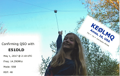
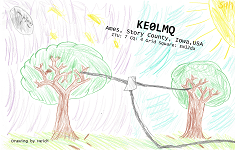
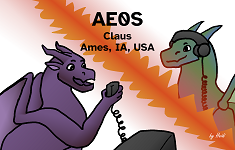
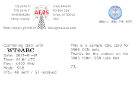
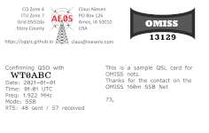
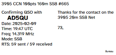
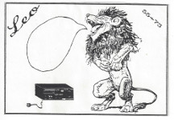
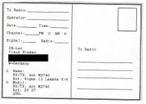

I upload logs to LOTW. (logs may take 24h to be uploaded)
Let me know if you want an QSL card, as I don't mail them by default. I primarily send/receive cards direct however
I am participating with the following bureaus:
W0 QSL Bureau Only for international/DX/non-USA contacts. Use your outgoing DX QSL Bureau.
Mailings are extremely slow. If you want my QSL card faster then mailing yours direct is better.
Direct QSL Address:
Claus Niesen
PO Box 126
Ames, IA 50010
USA
My QSL Cards:

Special card for my first DX contact. My daughter is pointing out the 20m dipole antenna she build with me.
That evening I talked (phone) to E51DLD from Cook Islands with it. Pretty awesome.

For my initial callsign KE0LMQ I asked my daughter to draw a picture for my QSL card. I guess she was a bit inspired
by the first one. *smile* Sent to: W2FN, N8VZ
Once more I asked my daughter to design me a QSL card. She likes dragons. Listing all send/received callsigns is a lot of work
and I stopped doing that. This is my current QSL card that I send out.

For my birthday my daughter design me another dragon QSL card. I'm currently using this along with the prior QSL cards.
Special QSL Cards:
For 3905 Century Club Net and OMISS QSLs I use my NetLogger Elf program to
print the QSL cards straight from the NetLogger export and import the QSOs into Log4OM, my primary logging program. With the high
volume of card exchanges generated through these nets, this keeps my workflow more optimized and ensures that I can send the cards
in a timely manner.


Initially I was printing the complete cards. I no longer do that and instead use my professionally printed cards.

To be able to use my QSL cards for the net, I've updated the program to print labels instead so I can use my QSL cards.
CB Radio:


In the 80's as a kid I did some CB operating and we sent each others QSL cards as well. This was my very first one.